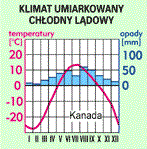

Drzewa w lasach równikowych mają gładkie, ostro zakończone liście, co sprzyja spływaniu po nich wody deszczowej.
Pnącza wykorzystują inne rośliny jako podpory, dzięki czemu mają zapewniony dostęp do światła.
Wilgotne lasy równikowe
Charakterystyczna, wiecznie zielona formacja leśna strefy międzyzwrotnikowej. Występuje na ubogich glebach laterytowych, w klimacie przez cały rok jednostajnie gorącym i wilgotnym. Na skutek szybkiego rozkładu materii organicznej roślinność jest gęsta i bujna. Lasy te cechuje brak sezonowej rytmiki w życiu roślin, ogromne bogactwo gatunkowe drzew (na 1 hektarze lasu tropikalnego występuje ok. 200 gatunków drzew, podczas gdy w lesie strefy umiarkowanej dziesięciokrotnie mniej), wielowarstwowy układ drzewostanu oraz obfitość lian i epifitów. Drzewa mają proste, wysokie (do 80 m) pnie.
Spis treści:
Występowanie

Warunki klimatyczne
Piętra lasu
Lasy równikowe odznaczają się piętrowością roślinności:
- Piętro pojedynczych drzew sięgających 60-80 m. Przykładowe rośliny: puchowiec pięciopręcikowy ("Drzewa Giganty").
- Piętro koron drzew stanowią wiecznie zielone drzewa, osiągające wysokość 30-50 m. Powierzchnia koron drzew, tworzy zielony rozległy baldachim . Drzewa często oplątane są lianami. Charakterystyczne rośliny - epifity, glony, grzyby, hebanowce, mahoniowce, palmy, mchy, porosty.
- Piętro średnie - piętro lian, nagich pni i konarów stanowią niższe drzewa, zaś poniżej nich (8-15 m) występuje zwarta warstwa koron drzew. W tym piętrze występują epifity. Należą do nich storczyki, kaktusowate, ananasowate oraz niektóre figowce.
- Piętro najniższe - piętro zarośli i runa ponieważ gęste korony drzew ograniczają dostęp światła słonecznego (1-2%) do dolnych partii, zarośla i ściółka leśna stanowią rośliny zielne, czasami w ogóle nie występuje. Na zacienionym dnie tropikalnego lasu spotyka się tylko drobne glony, mchy, porosty, krzewinki, delikatne grzyby, a czasami rośliny zielne, gdyż przeżyć mogą tam tylko skiofity (rośliny cieniolubne).
Flora
W lasach równikowych rosną drzewa, takie jak:
- bananowce
- palmy
- kakaowce
- paprocie drzewiaste
- mahoniowce
Fauna
Lasy deszczowe cechują się bogactwem gatunków zwierząt. Spośród ssaków występują tu np. małpy, także człekokształtne (na Madagaskarze małpiatki), hipopotamy, bawoły, okapi. Część zwierząt wykazuje przystosowanie do życia w gęstwinach leśnych, np. zmniejszenie rozmiaru ciała (np. słoń afrykański leśny).
Wykorzystanie przez ludzi
Tereny lasów równikowych zamieszkiwane są przez plemiona zajmujące się łowiectwem, zbieractwem, a także uprawą roli – przykładem są afrykańscy Pigmeje i Bantu, malajscy Semangowie, Papuasi z Nowej Gwinei, Indianie południowoamerykańscy i inni. Roślinność wilgotnych lasów równikowych dostarcza ludziom takich produktów, jak cynamon, pieprz, goździki oraz szlachetne gatunki drewna: mahoń, heban, balsy i palisander. Z niektórych tropikalnych roślin uzyskuje się substancje wykorzystywane do produkcji leków. W miejscu wyciętych lasów deszczowych ludzie zakładają plantacje bananowców, trzciny cukrowej, kawy i palm kokosowych.
Znaczenie lasów tropikalnych
Wilgotne lasy równikowe są przede wszystkim wielkim producentem tlenu i jednocześnie pochłaniaczem dwutlenku węgla; to tzw. ZIELONE PŁUCA ŚWIATA
Film
KLIKNIJ! Link do filmu!
Sawanna
To trawiasta formacja roślinna, strefy międzyzwrotnikowej o klimacie gorącym z wyraźnie zaznaczoną porą suchą, trwającą od 3 do 9 miesięcy oraz porą deszczową.Spis treści:
Występowanie
Sawanny występują na znacznych obszarach Afryki i Ameryki Południowej na północ i południe od strefy lasów równikowych, a także w Indiach, wschodniej Australii czy na pograniczu meksykańsko-amerykańskim. Sawanna nosi różne nazwy regionalne np. campo w Brazylii, czy llanos w Wenezueli.Warunki klimatyczne
Na sawannach deszcze padają tylko latem (pora deszczowa), gdy słońce znajduje się wysoko na niebie, natomiast zima (pora sucha) jest bezdeszczowa. W porze suchej panuje bezchmurna, słoneczna pogoda i jest bardzo gorąco. W porze deszczowej temperatury powietrza są nieznacznie niższe. Im bliżej zwrotnika, tym krótsza jest pora deszczowa, a pora sucha dłuższa. W sawannie wilgotnej pora sucha trwa od 3 do 5 miesięcy, w sawannie suchej susza trwa od 5 do 7 miesięcy. Na sawannie kolczastej pora sucha trwać może nierzadko kilka lat. Ilość opadów jest bardzo zróżnicowana, choć zasadniczo waha się od 200 do 500 mm na rok. W porze suchej częstym zjawiskiem są pożary.Roślinność
W szacie roślinnej dominują kępy sucholubnych traw (np. afrykańska trawa słoniowa dochodząca do 3 m wysokości). Na niektórych sawannach rosną nieliczne drzewa, np. akacje, baobaby, które zwykle zrzucają liście w porze suchej. Większe skupiska drzew występują tylko nad ciekami wodnymi tworząc tzw. lasy galeriowe. W krajobrazie nie ma wyraźnej granicy między wilgotnym lasem równikowym a trawiastą sawanną. W strefie przejściowej w miarę posuwania się w stronę sawanny las staje się coraz rzadszy, a drzewa coraz niższe. Sawanny żywią stada zwierząt roślinożernych. Film
KLIKNIJ! Link do filmu!
Pustynie
To teren o znacznej powierzchni, pozbawiony zwartej szaty roślinnej wskutek małej ilości opadów i przynajmniej okresowo wysokich temperatur powietrza. Na gorących pustyniach ekstremalne temperatury sięgają do 50 °C (najwyższa zanotowana temperatura to 57,8 °C), nocą zaś dochodzą do 0 °C, charakterystyczne są dla nich też znaczne amplitudy dobowe temperatury, stały deficyt wilgotności oraz silne nasłonecznienie. Spis treści:
Typy pustyń
- kamienista (hamada)
- żwirowa (serir)
- piaszczysta (erg)
Opady
Opady na pustyni są bardzo niskie, ale wartości ich mogą być zróżnicowane. Wynoszą one, wg różnych źródeł, do 160, 250 lub nawet 300 mm rocznie; niekiedy mogą być nawet większe, ale za to nierównomiernie rozłożone w ciągu roku.Temperatura
Temperatura powietrza na pustyniach jest wysoka, przynajmniej latem i bardzo zmienna; maksymalna na pustyniach gorących może zbliżać się do 60°C, minimalna spada poniżej 0°C, a na chłodnych pustyniach Azji Środkowej do 30°C; występują znaczne dobowe (do 30-40°C) i roczne wahania temperatury (zwłaszcza w środk. Azji, gdzie dochodzą do 60°C). O temperaturze decyduje zarówno szerokość geograficzna, jak i wysokość nad poziomem morza, a przyczyną olbrzymich różnic temperatury między dniem a nocą jest niska wilgotność powietrza.Rzeźba terenu i geomorfologia
Wobec braku okrywy roślinnej na rzeźbę pustyni duży wpływ ma działalność deflacyjna wiatru, czyli wywiewanie oraz żłobienie, ścieranie i polerowanie powierzchni skalnych przez piasek niesiony przez wiatr (jej wytworem są np. wygłady eoliczne, żłobki i bruzdy korazyjne, graniaki wiatrowe, grzyby i okapy skalne), a także akumulacja eoliczna (tworząca m.in. zmarszczki eoliczne; wydmy). Wbrew powszechnej opinii powierzchnia większości pustyń nie jest piaszczysta; np. pustynie piaszczyste stanowią tylko 1/9 powierzchni Sahary, a największe obszary zajmują pustynie skaliste.
Gleby
Gleby pustyń są prymitywne (przeważnie szaroziemy, gleby kasztanowe), o małej zawartości materii organicznej na skutek braku roślinności, często praktycznie pozbawione próchnicy. W wyniku podsiąkania zawartej w nich wody i szybkiego jej wyparowywania, mogą być bogate w sole mineralnewskutek czego gleby pustynne są często zasolone, lub też występują na nich skorupy.Fauna
Zwierzęta pustyni są przeważnie nieduże, o jasnej barwie ciała; w dzień ukrywają się w norach, jamach i zagłębieniach skalnych lub zakopują się w piasku, gdzie panuje dużo niższa temperatura i większa wilgotność niż na powierzchni; nocą na pustyni panują niskie temperatury i może pojawiać się rosa, a zjadanie pokrytych nią roślin dostarcza roślinożercom wody. Rosę wykorzystują także nieliczne na pustyniach ślimaki. 
Wśród kręgowców wyraźnie dominującą grupą są gady – liczne gatunki jaszczurek (agam lub legwanów, waranów, gekonów, scynków), węży i żółwi. Ptaki, podobnie jak gady, prowadzą oszczędną gospodarką wodną (wydalają kwas moczowy), a poza tym mogą pokonywać długie trasy do wodopoju, ale ze względu na wysoki poziom przemiany materii wymagają dużych ilości pokarmu.
Flora
Niekorzystne dla roślin warunki klimatyczne powodują, że szata roślinna jest bardzo skąpa.
Zależnie od lokalnego klimatu występują różne gatunki roślin, u wszystkich jednak wykształciły się adaptacje fizjologiczne i morfologiczne sprzyjające oszczędnej gospodarce wodnej. Ograniczają one np. transpirację (parowanie wody) w ciągu dnia, a w nocy adsorbują możliwie duże ilości rosy; wytrzymują też długie okresy uśpienia. W skład flory pustynnej wchodzą rośliny jednoroczne, które pojawiają się w okresie opadów i wieloletnie. Rośliny jednoroczne cały cykl życiowy ograniczają do krótkotrwałego okresu opadów; rośliny wieloletnie charakteryzują się zazwyczaj silną redukcją wielkości liści lub nawet całkowitym ich brakiem, co zmniejsza tempo utraty wody. Mają też na ogół rozbudowane systemy korzeniowe, sięgające głęboko w glebę lub w szczeliny skalne.Film
KLIKNIJ! Link do filmu!
Roślinność śródziemnomorska
Strefa śródziemnomorska zajmuje najmniejszą powierzchnię ze wszystkich stref geograficznych. Podobne warunki jak na wybrzeżach Morza Śródziemnego panują również na niewielkich obszarach na czterech innych kontynentach: na zachodzie Ameryki Północnej i Południowej oraz na południu Australii i Afryki.Spis treści:
Roślinność w strefie śródziemnomorskiej występują dwie pory roku:- gorące i suche lato
- łagodna i wilgotna zima
Roślinność
Roślinność w tej strefie jest przystosowana do letniego okresu suszy. Liście drzew i krzewów są skórzaste - lśniące, sztywne, grube i twarde. Dzięki temu nie usychają nawet wtedy, gdy utracą dużo wody. Roślinność strefy śródziemnomorskiej nazywana jest także roślinnością twardolistną lub makią. Takie liście mają wawrzyn, czyli laur. Roślinność twardolistna jest wiecznie zielona. W przeszłości w tej strefie rosły lasy liściaste i iglaste składające się z cedrów, dębów, sosen, cyprysów.Zwierzęta
W strefie śródziemnomorskiej żyje wiele gatunków zwierząt:
Lasy liściaste i mieszane
pierwotnie porastały wielkie połacie Eurazji i Ameryki Północnej. Jednak człowiek, zagospodarowując na przestrzeni wieków coraz to nowe tereny, wyciął większą część tych lasów. Skłoniły go do tego korzystne warunki klimatyczne oraz występujące w podłożu gleby brunatne (dobre dla rozwoju rolnictwa). Do czasów obecnych lasów tych zachowało się stosunkowo niewiele. Na ich miejscu mamy dziś gęsto zaludnione tereny Europy i Ameryki Północnej, na których dominują krajobrazy rolnicze-wiejskie, miejskie i przemysłowe.Stepy
To równina pozbawiona drzew, rzek i jezior. Występuje w warunkach klimatu umiarkowanego z gorącym, suchym latem.
Spis treści:
Fauna
Wśród traw żyje wiele owadów, takich jak: pasikoniki, mszyce, mrówki, termity, szarańcza, skoczki. Chociaż step dostarcza zwierzętom znaczne ilości pokarmu roślinnego, to jednak nie daje im możliwości schronienia się przed drapieżnikami. Stąd też duże roślinożerne ssaki kopytne - antylopy, np. suhaki, gazele - potrafią bardzo szybko biegać, aby zapewnić sobie bezpieczeństwo. Stepowymi ssakami są również dzikie konie i osły. Małe roślinożerne gryzonie, takie jak: pieski preriowe, świstaki, susły, norniki, chomiki, ryją nory i w nich się chronią. Mała ilość stepowych dużych zwierząt kopytnych ogranicza możliwość zdobywania pokarmu przez drapieżniki. Żyją tu wilki i stepowe lisy oraz drapieżne ptaki: orzeł, pustułka, sokół, sowa, myszołów, a także kuropatwa, przepiórka, cietrzew, drop.
Flora
W krajobrazie stepowym dominują trawy. Na wilgotniejszych, czarnoziemnych terenach trawy są gęste, wysokie, niektóre mają nawet ponad 2 m. Na terenach bardziej suchych trawy są niższe i rosną kępami. Obok traw rośnie sporo innych roślin zielnych, np. wrotycz, sasanka, niezapominajka, miłek wiosenny, tararus zwyczajny. Okres roku, w którym rozwijają się rośliny stepowe nie jest długi. W kwietniu i w maju rośliny zakwitają i step staje się kolorowy. Jednak już w czerwcu trawy żółkną i wysychają. Latem zdarzają się susze, a flora wtedy częściowo jest w spoczynku. Jesienią step brunatnieje i zamiera. Pełny spoczynek roślin następuje zimą.Gleby
Na terenach stepów występują najżyźniejsze gleby – czarnoziemy (idealne do wszelkich upraw). Na terenach bardziej mokrych uprawia się zboża (pszenicę), soję, kukurydzę, buraki cukrowe oraz marchew. Bardziej suche obszary stepów wykorzystywane są jako całoroczne obszary wypasu bydła. Dlatego właśnie stepy nazwane są spichlerzami świata. Film
KLIKNIJ! Link do filmu!
KLIKNIJ! Link do filmu 2!
Tajga
Borealne lasy szpilkowe, występujące w północnej części Ameryki Północnej (Alaska i Kanada), Europy (Półwysep Skandynawski, Karelia, północno-wschodnia część Niziny Wschodnioeuropejskiej) oraz Azji (Syberia, Sachalin, Kamczatka, Hokkaido), w obrębie klimatu umiarkowanego chłodnego na półkuli północnej.Spis treści:
Warunki klimatyczne
Maximum opadów przypada na miesiące letnie. Wtedy również temperatura sięga powyżej 0 stopni C (maximum w lipcu - około 13 stopni). Ujemna temperatura występuje w okresie zimowym: od października do kwietnia włącznie.

Typy tajgi
Wyróżnić można dwa typy tajgi eurazjatyckiej:
- tajgę ciemną – występuje głównie w Europie i Zachodniej Syberii, ale także wyspowo na obszarze całej Syberii. Budowana jest przez gatunki wyższe, rosnące gęściej ( świerk syberyjski, jodła syberyjska, limba syberyjska), ma stosunkowo bogate runo krzewinkowe ;
- tajgę jasną – występuje we Wschodniej Syberii i północnej Europie. Budowana jest przez gatunki niższe, rosnące rzadziej (modrzew dahurski, sosna zwyczajna), runo ma ubogie, chrobotkowe.
Fauna
W ciągu krótkiego lata w lasach tajgi pojawiają się duże ilości komarów. Poza wieloma gatunkami owadów żyją tam także liczne ptaki: sikory, jemiołuszki, głuszce, krogulce i jastrzębie. Niektóre z nich, np. jemiołuszki, uciekają przed zimą, odlatując na południe, do strefy lasów liściastych. Na obszarze tajgi spotyka się wędrujące stada reniferów. Występuje tam także wiele innych gatunków ssaków, takich jak łosie, łasice, gronostaje, wiewiórki, rosomaki, borsuki, rysie, lisy, wilki, niedźwiedzie i kuny. Niektóre z nich, np. rosomaki i niedźwiedzie brunatne, na okres zimy zapadają w stan odrętwienia.
Flora
Na obszarach tajgi rosną głównie drzewa iglaste: świerki, sosny, sosny limby, jodły syberyjskie, modrzewie, lecz także – najczęściej drobnolistne – liściaste: brzozy, osiki, olsze, jarzęby. Drzewa szpilkowe są bardzo dobrze przystosowane do panujących tu warunków klimatycznych. Mogą rosnąć aż do tych obszarów, na których zaledwie przez 30 dni w roku średnia temperatura przekracza 10°C, a w dwóch następnych miesiącach nie ma mrozu. Gruba, woskowa okrywa szpilek chroni je przed mrozami. 
Film
KLIKNIJ! Link do filmu!
Tundra
Bezleśne zbiorowisko roślinności w zimnym klimacie strefy arktycznej i subarktycznej. Charakteryzuje się występowaniem gleb tundrowych, stale zamarzniętym podglebiem i bardzo niską pokrywą roślinną, zdominowaną przez mchy i porosty.Wyróżnia się 4 podstawowe typy tundry (w kolejności z południa na północ): lasotundra, tundra krzewinkowa, tundra mszysto-porostowa, tundra arktyczna. Na obszarach górskich ponadto występuje tundra górska.
Spis treści:
Warunki klimatyczne
Latem temperatura nie przekracza 15°C, trwa dzień polarny. Wierzchnia warstwa gruntu – do około 1 metra - ulega rozmarznięciu (tak zwana wieczna zmarzlina), wskutek czego staje się on często grząskim bagnem, w głąb którego nie może wsiąknąć nadmiar wody. Zima jest mroźna i śnieżna, temperatura dochodzi do -48°C. Trwa noc polarna. Wieją silne wiatry. Występuje zjawisko zorzy polarnej. Grunt ponownie zamarza.Fauna
Najliczniejszymi i najbardziej charakterystycznymi ssakami tundry są lemingi. Żywią się korzeniami, mchami i trawą. Rozmnażają się bardzo intensywnie i są głównym pożywieniem tamtejszych drapieżników: gronostajów, lisów polarnych, łasic i wilków. Ponadto drapieżniki tundry polują na pardwy, zające bielaki i susły.

Ze ssaków roślinożernych występuje tu renifer, piżmowół i zając bielak. Do charakterystycznych ptaków tundry należą: myszołów włochaty, białozór, pardwa mszarna i puchacz śnieżny. Latem wiele ptaków, zwłaszcza siewkowatych, przylatuje odbyć tu lęgi.
Flora
Większość roślin wyrasta zaledwie kilka centymetrów nad ziemię. Przy samej powierzchni ziemi rosną mchy i porosty (najbardziej znany to chrobotek reniferowy); nieco wyżej są trawy i niewielkie krzewinki (np. borówki). Występują tam także turzyce. Najwyższą warstwę roślin tworzą pojedyncze karłowate brzozy i wierzby, które nie osiągają wysokości większej niż 30 cm. Ich gałęzie rosną poziomo i mogą mieć kilka metrów długości. W wielu rejonach położonych na południowej stronie tundry zbiera się jagody: borówki i maliny.
Mieszkańcy tundry
Strefa tundry jest prawie zupełnie pozbawiona ludzkich osiedli. Rdzenni mieszkańcy tundry są myśliwymi i rybakami. Należą do nich północnoamerykańscy Inuici (Eskimosi). Jeszcze do niedawna wędrowali po wybrzeżach Oceanu Arktycznego, polując na ssaki morskie (foki, wieloryby), łowiąc ryby. Mieszkali w domkach ze śniegu i lodu, zwanych igloo. Przedmioty codziennego użytku wykonywali z kości i skór zwierząt.Obecnie życie Eskimosów się zmieniło. Z igloo, w których panowała temperatura około 0°C, przenieśli się do ogrzewanych domów. Nadal zajmują się rybołówstwem, ale do połowów używają nowoczesnego sprzętu. Pracują także w zakładach rybnych, są przewodnikami wycieczek, organizują biegi narciarskie dla turystów i wyrabiają pamiątki. Na Alasce wielu znalazło zatrudnienie przy wydobyciu ropy naftowej.
Film
KLIKNIJ! Link do filmu!
Pustynie lodowe
Obszar praktycznie pozbawiony pokrywy roślinnej, występuje w strefie podbiegunowej. Obszar pustyni lodowej pokrywa lądolód, czyli gruba warstwa lodu przykrywająca wielki obszar ziemi, o grubości kilku kilometrów, który powstaje w warunkach klimatu polarnego. Na pustyniach polarnych przez cały rok obserwuje się temperatury ujemne (-20 do -50 stopni C.), opady wyłącznie w postaci śniegu (do 250 mm rocznie) oraz zjawisko dnia i nocy polarnej.
Pustynie lodowe obejmują przeważające obszary północnych wysp i archipelagów w Arktyce, oraz prawie całą Antarktydę, w obrębie pustyni polarnej mogą występować stanowiska szczególnie odpornych roślin.
Film
KLIKNIJ! Link do filmu!